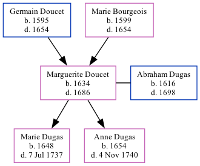

Marguerite Louise Dugas (née Doucet) 1634 - 1686
[ Home ] | [ Calendar ] | [ Surnames Index ] | [ Family History ]The child of Germain Doucet and Marie Bourgeois, Marguerite Doucet, the 10 times great-grandmother of Michele Copp (née Phillips), was born in Port Royal, , Nova Scotia, Canada in 16341 and married Abraham Dugas (with whom she had 2 children: Marie and Anne) in Port Royal, , New Brunswick, Canada in 16471.
She died in 1686 in Port Royal, Acadia, Nova Scotia, Canada.
Parents
- Germain was born in 1595
- Marie was born in 1599
Children
- Marie was born in 1648
- Anne was born in 1654
Citations
- U.S. and International Marriage Records, 1560-1900 Online publication - Provo, UT, USA: The Generations Network, Inc., 2004.Original data - This unique collection of records was extracted from a variety of sources including family group sheets and electronic databases. Originally, the information was deriv
Family Tree
Generated by ged2site. Last updated on Sep 9, 2024